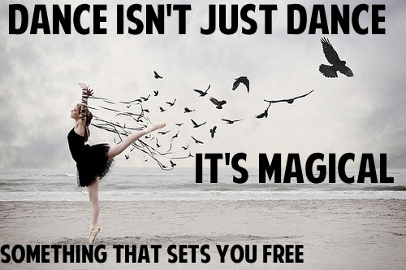

Some things that interest me is singing. I have been singing ever since i was lttle. Another thing i like to do is come up with choreography for dances and show the dances to my cousins and then we do the dance in front of my aunt and uncles, i love to dance even if i'm not so good at it, i dont dance to impress i dance for me.I also love school so much, i love to learn new things. My favorite subjects in school is english and science. I like english because i like to read and write essays, and i like science because i like to learn about the body and do cool expeiriments.
Another reason i like science would be because it has to do with what i want to be when i grow up, which is to be a pediatrician or a OB-GYN. To become any of those things in neen to do good in science and understand it. That is my plan A, my plan B is to be a english teacher for an elementary school, and my final plan is plan C which is to be a hair styles. The reaon i want to be a child doctor is because i love to take care of children like my cousins.
